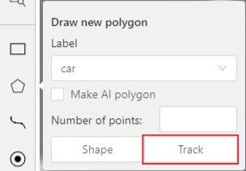
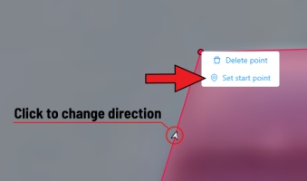

Track mode with polygons
Polygons in the track mode allow you to mark moving objects more accurately other than using a rectangle (Tracking mode (basic); Tracking mode (advanced)).
-
To create a polygon in the track mode, click the
Trackbutton.
-
Create a polygon the same way as in the case of Annotation with polygons. Press
Nor click theDonebutton on the top panel to complete the polygon. -
Pay attention to the fact that the created polygon has a starting point and a direction, these elements are important for annotation of the following frames.
-
After going a few frames forward press
Shift+N, the old polygon will disappear and you can create a new polygon. The new starting point should match the starting point of the previously created polygon (in this example, the top of the left mirror). The direction must also match (in this example, clockwise). After creating the polygon, pressNand the intermediate frames will be interpolated automatically.
-
If you need to change the starting point, right-click on the desired point and select
Set starting point. To change the direction, right-click on the desired point and select switch orientation.
There is no need to redraw the polygon every time using Shift+N,
instead you can simply move the points or edit a part of the polygon by pressing Shift+Click.